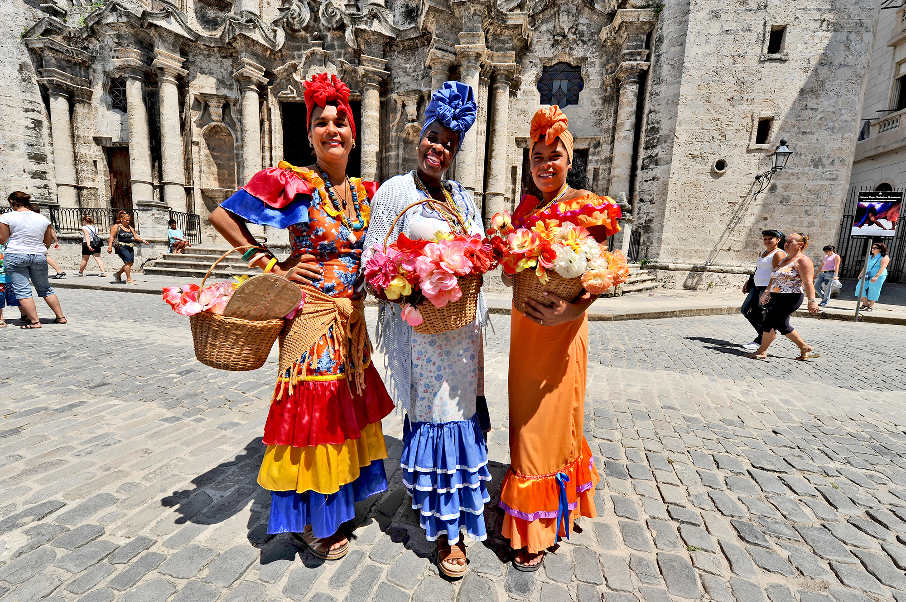
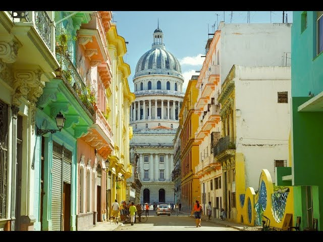

КОЛОРИТ
Куба – это страна сигар, рома и сальсы, страна свободы и любви. Она завораживает и манит беззаботностью, гостеприимством и жизнелюбием.
Чтобы узнать Кубу получше, следует совершить путешествие по провинциям Сьенфуэгос, Тринидад и Санта-Клара.
Сьенфуэгос считается самым маленьким городом Кубы. Он расположен на берегу живописной бухты. Стоит посетить крепость Нуэстра-Сеньора-де-лос-Анхелес-де-Хагуа и парк Хосе Марти, в котором находится Триумфальная арка, собор, театр и несколько дворцов. Довольно необычная достопримечательность города – это местные кладбища, надгробные памятники которых причисляются к шедеврам кубинского национального искусства. Одно из самых красивых мест провинции Сьенфуэгос – пещера Мартин Инфьерно в местечке Эль-Ничо, в которой находится сталагмит высотой в 67 метров, признанный самым большим на Кубе.
Тринидад — город-музей под открытым небом – с 1998 года находится под защитой ЮНЕСКО. В его центре сохранилась архитектура XVIII-XIX веков: особняки и роскошные резиденции бывших работорговцев и сахарных королей, соборы, католические храмы и булыжные мостовые. Тринидад лучше посещать феврале-марте, когда проходит ежегодный карнавал.
Санта-Клара хранит память об Эрнесте Че Гевара. Именно здесь произошло одно из самых знаменитых сражений, которое сыграло в судьбе Кубы определяющую роль. Самые известные достопримечательностями города: мемориал Че Гевары, где хранится его прах, и Музей революции.